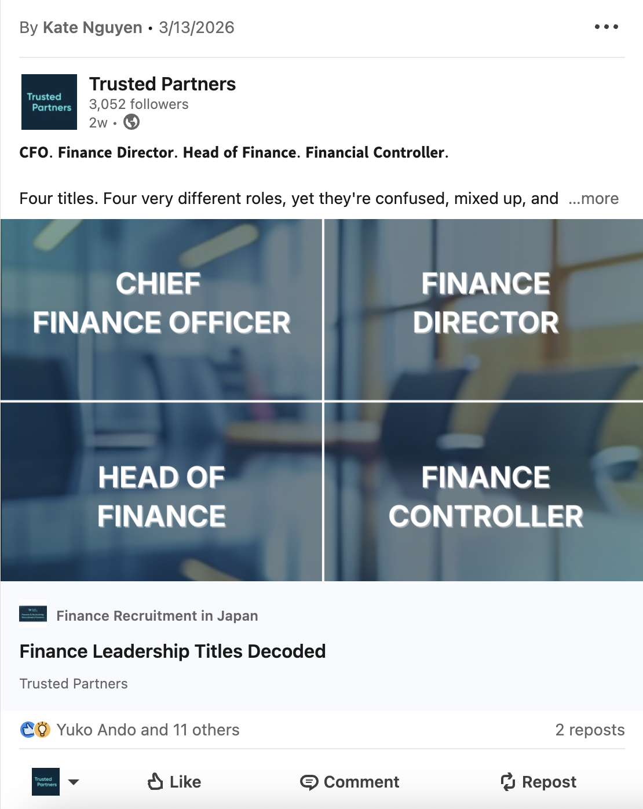
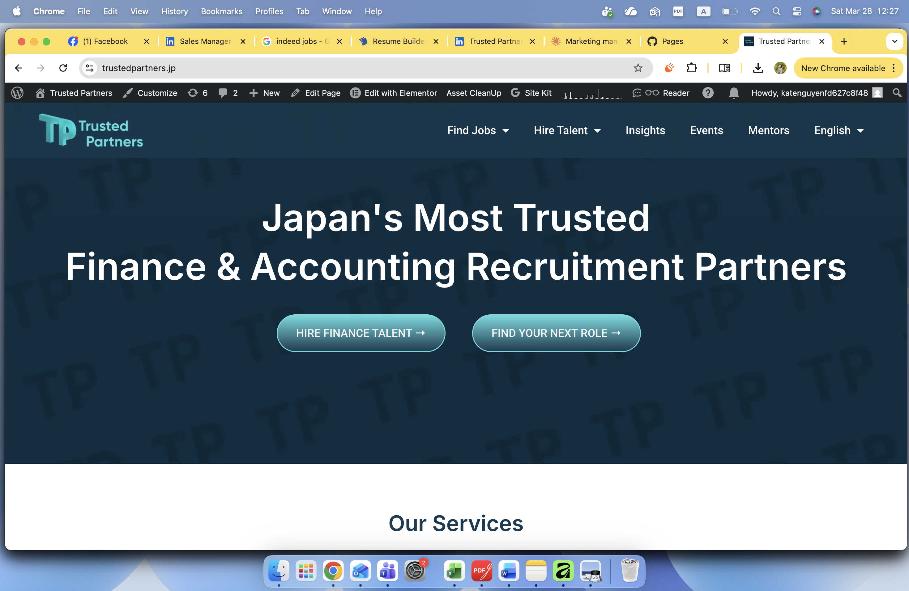

Three examples chosen to show range: a demand-generation publication, an ongoing content programme, and a full website build. All produced hands-on — strategy, copy, design, and distribution.
Researched, written, designed, and launched a Japan-wide salary and talent trends guide targeting bilingual finance and accounting professionals. I owned the full process — from brief to publication — including market research, writing all copy, coordinating design, and building the promotional campaign across LinkedIn and email.
The guide became a primary lead generation asset for the recruitment team, driving both candidate registrations and client enquiries. Promoted via a coordinated LinkedIn post series and segmented email campaign.

Launched and manage an ongoing LinkedIn newsletter covering Finance & Accounting market insights, hiring trends, and career guidance for professionals in Japan. I write all articles, produce supporting visual assets in Canva, and distribute across both the newsletter and the company LinkedIn page.
Content types include: market observation posts, candidate spotlights, finance leadership insights, job announcements, and long-form articles on topics like CFO career paths, salary benchmarks, and Japan market hiring trends — all written to serve both candidate and client audiences.

Planned, designed, and launched a full website redesign for Trusted Partners on WordPress + Elementor Pro. I wrote all SEO-optimised service page copy, structured the information architecture, and managed the build end-to-end — including bilingual (English/Japanese) pages, the Finance Leadership Community section, and a jobs and insights hub.
Post-launch I continue to manage the site: publishing new content, updating pages, running on-page SEO improvements, and monitoring performance via Google Analytics and Looker Studio.
Hands-on experience with Mailchimp for campaign creation, list segmentation, automation workflows, and performance reporting. I manage a 2,000-contact segmented database at Trusted Partners across separate candidate and client tracks, maintaining a ~30% open rate. Familiar with CRM principles around lifecycle stages, lead scoring, and nurture sequences. HubSpot: I have working knowledge of HubSpot's contact management, email campaign, and pipeline tools — I'm actively deepening this and comfortable picking up platform specifics quickly given my CRM foundation.
Managed on-page SEO across Trusted Partners' website — keyword research, meta descriptions, page structure, internal linking, and content optimisation. Built and maintain the site on WordPress + Elementor Pro. Monitor performance via Google Analytics and Looker Studio. Delivered a 41% increase in web traffic post-redesign. Familiar with SEO fundamentals including technical SEO basics, content-led organic growth, and tracking keyword performance.
Working knowledge of LinkedIn Campaign Manager for sponsored content and lead generation campaign setup. Experience planning paid social strategies and briefing campaigns. My current paid ads experience is at the coordination and strategy level rather than deep platform execution — I understand targeting, budget allocation, A/B testing logic, and ROAS measurement, and I'm actively building hands-on execution experience.
Proficient in Canva (daily use — email assets, LinkedIn graphics, event collateral, reports), Figma, Affinity Designer, and Adobe Creative Suite. Experienced turning raw ideas, recruiter insights, and voice-note briefs into multi-format content assets — posts, newsletters, PDFs, landing pages, and campaign emails. This is a core part of how I work: converting business knowledge into market-facing material fast.
A note on ATS platforms: My background is in recruitment marketing rather than ATS administration, so my experience is on the marketing and candidate communication side — building nurture sequences, managing candidate-facing email campaigns, and supporting recruiters with content and collateral — rather than deep ATS configuration. I'm familiar with how ATS data flows into marketing segmentation and am quick to adapt to new platforms. I'd be happy to discuss how my CRM and email background maps to Talent Right's specific stack.